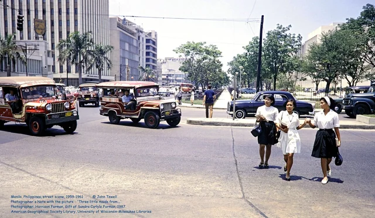
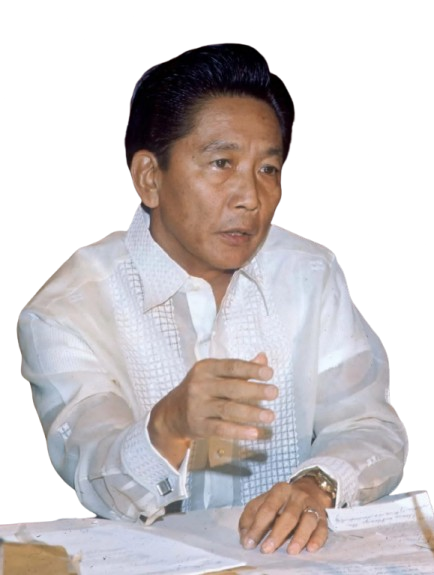
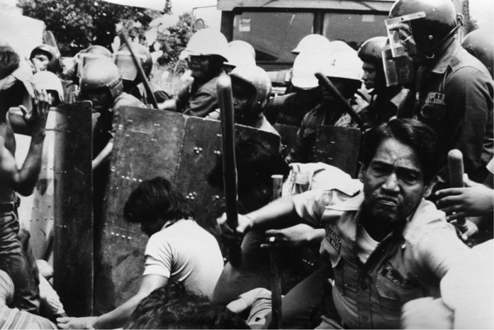
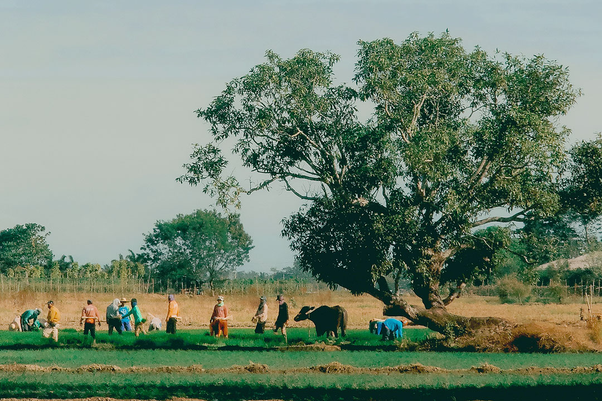
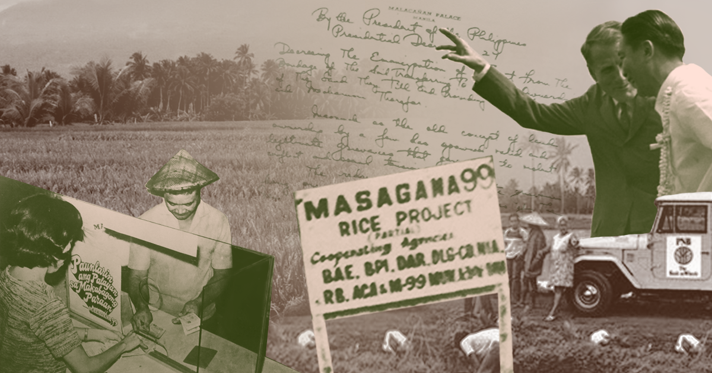
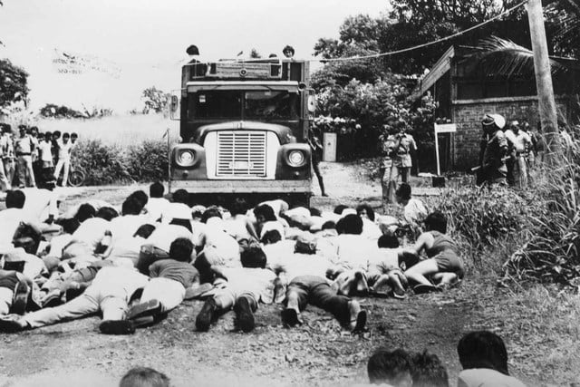
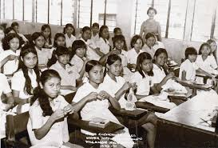
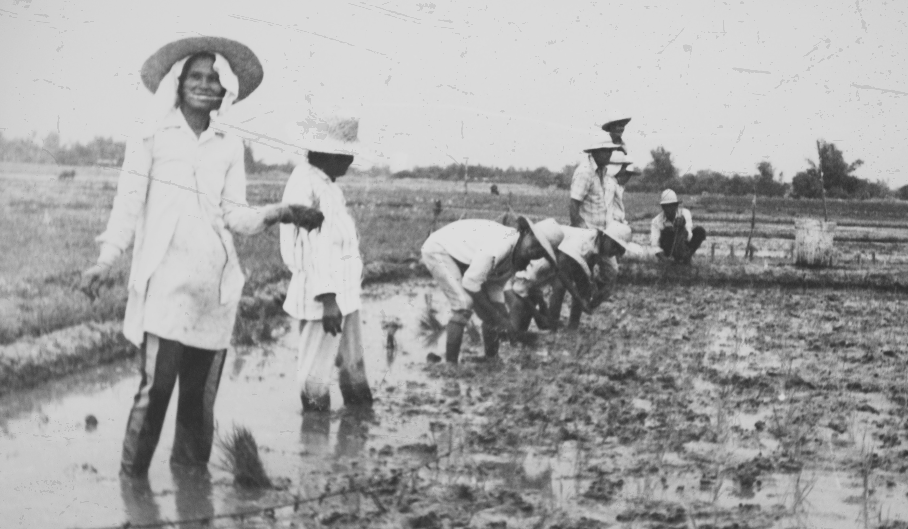

Social Issues
An examination of the social consequences of the Marcos era — from Martial Law repression and human rights violations to state-led development programs, public services, and the lasting social divisions created during authoritarian rule.

The Marcos period reshaped everyday life through both repression and state-led social programsSociety Under Martial Law

Martial Law and Social Control
Ferdinand Marcos Sr.’s declaration of Martial Law in 1972 had deep and lasting consequences for Filipino society. The government expanded its control over daily life by restricting civil liberties, limiting freedom of speech, curbing press freedom, and suppressing the right of citizens to organize, protest, and assemble.
Curfews became a regular feature of urban life, and military and police forces were given broader authority to monitor, detain, and arrest individuals suspected of opposing the government. What had once been political disagreement could now be treated as a threat to state security. For many Filipinos, this changed the social atmosphere from one of open civic participation to one marked by fear, caution, and silence.
Key Facts
- Martial Law greatly restricted civil liberties and public dissent
- Curfews, surveillance, and military checkpoints became part of everyday social life
- Human rights groups documented arbitrary arrests, torture, forced disappearances, and extrajudicial killings
- The Human Rights Victims’ Claims Board (HRVCB) later recognized thousands of victims of abuse during the Marcos era
- The Marcos administration also promoted social development programs in agriculture, health, education, and rural development
- Masagana 99 initially boosted rice production but later ran into serious long-term problems
- The era remains socially controversial because it combined public development efforts with repression and hardship
Human Rights Violations and Social Fear
One of the most serious social consequences of the Marcos era was the normalization of state violence. Human rights organizations documented widespread abuses during the Martial Law period. These included arbitrary arrests, detention without trial, torture of political prisoners, forced disappearances, and extrajudicial killings. Students, activists, journalists, labor leaders, church workers, farmers, and opposition figures were among those targeted.

Beyond the physical harm suffered by victims, these violations had a wider social effect. Families were left searching for missing relatives. Communities learned to fear military presence and government attention. Public criticism became dangerous, and many people began to censor themselves in daily conversation. In this way, repression did not affect only those directly arrested or harmed — it reshaped the behavior of society as a whole.
Under Martial Law, fear itself became a social condition: people did not only obey the state — many learned to remain silent in order to survive it.
Recognized Victims of Abuse
In later years, evidential records collected by the Human Rights Victims’ Claims Board (HRVCB) formally recognized thousands of Filipinos as victims of human rights violations committed during the Marcos era. This official recognition became important because it helped preserve public memory and provided legal and historical acknowledgement of abuses that many survivors and families had long fought to make visible.
The existence of these records also reinforces a central truth about the social history of the period: repression was not isolated or accidental. It formed part of a broader system that used fear, detention, and violence to maintain political control over the population.
Social Development Programs
At the same time, the Marcos administration pursued a number of social development programs. These included efforts in land reform, public health expansion, education, and rural development. The government presented these initiatives as proof that authoritarian discipline could deliver order, modernization, and improved public services.
In some areas, these programs produced visible results. Schools, roads, clinics, and public works projects were expanded in different parts of the country. Agricultural policy was also given high priority, since food production and rural stability were seen as essential to national development. For supporters of the regime, these programs showed that the administration was capable of decisive, large-scale action.

Masagana 99 and the Limits of Reform
One of the best-known social and agricultural programs of the period was Masagana 99, which aimed to increase rice production and help the Philippines achieve greater food self-sufficiency. The program encouraged the use of high-yield rice varieties, fertilizers, credit assistance, and modern farming techniques. In its early stages, it did contribute to increases in rice production and was promoted as a major success of the administration.
However, the long-term results were far less successful. Over time, Masagana 99 encountered major problems, including loan defaults, weak institutional support, mismanagement, and the inability of many farmers to sustain the costs of the program. Without stable long-term backing, the gains proved difficult to maintain.
This made Masagana 99 a useful example of the broader contradictions of the Marcos era. It reflected a genuine state effort to modernize agriculture, but it also exposed the weaknesses of highly centralized programs that were ambitious in design yet uneven in implementation. What appeared effective in the short term was often much less durable in the long term.

Everyday Life and Social Consequences
The social legacy of the Marcos era cannot be understood only through state policies or official statistics. It must also be measured in everyday experience. For some Filipinos, the period was remembered for public order, visible infrastructure, and the appearance of strong government. For many others, it was a time of fear, economic difficulty, restricted freedoms, and growing inequality.
These contradictions explain why the period remains deeply contested in public memory. Some point to infrastructure, agricultural programs, and expanded state services as signs of progress. Others emphasize the social cost of repression, the trauma left by human rights abuses, and the hardship experienced by ordinary citizens living under authoritarian rule. Both are part of the historical record, but they do not carry equal moral weight for those who suffered directly from the system.



Social Timeline
Martial Law Declared
Civil liberties were restricted, curfews imposed, and security forces given expanded powers over arrests and detention.
Rise in Human Rights Violations
Arrests without trial, torture, disappearances, and extrajudicial killings were documented by victims, families, and rights groups.
Expansion of Social Development Programs
The state pursued land reform efforts, public health initiatives, education expansion, and rural development projects.
Masagana 99 Gains Attention
The agricultural program was promoted as a major achievement after early increases in rice production.
Long-Term Problems Emerge
Loan defaults, mismanagement, and weak support systems undermined the sustainability of many development efforts, including Masagana 99.
Recognition and Reassessment
The country continued to confront the social legacy of Martial Law through survivor testimony, historical study, and formal recognition of human rights victims.
Primary Source: Everyday Life Under Martial Law
A documentary clip about the life under Martial Law.